От Администриране -> Номенклатури -> Групи шифри Специален достъп се достъпва екран Списък групи шифри – Специален достъп.
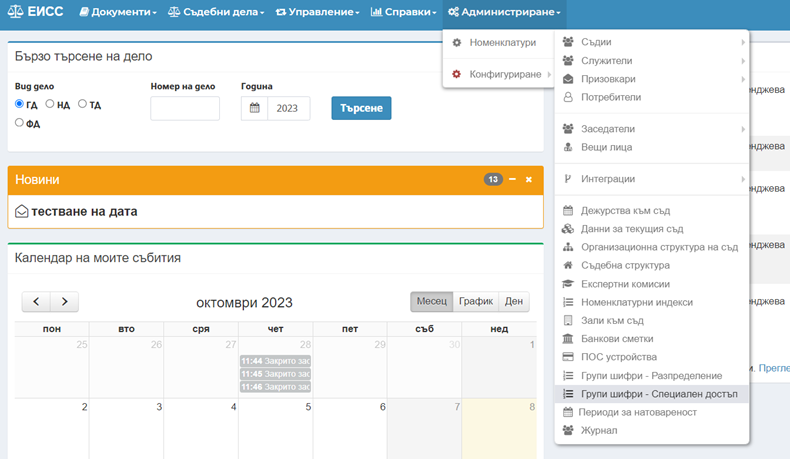
Чрез избор на бутон
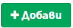
се отваря екранна форма Добавяне група шифри.
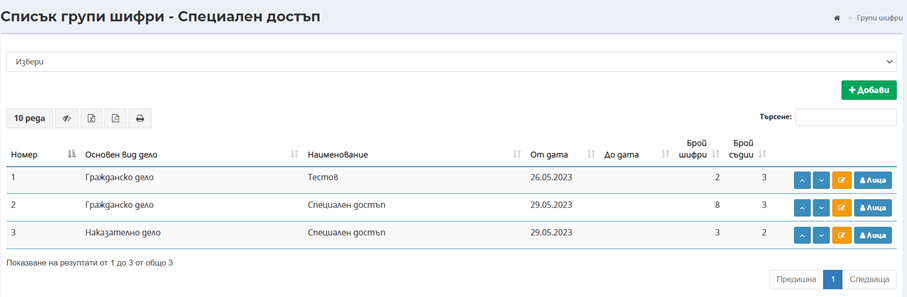
Избираме Основен вид дело, в поле Наименование записваме избраното име, в поле Дата от се попълва датата, намираме шифъра, по който достъпа трябва да е специален, маркираме го и със зелената стрелка го преместваме от лявата в дясната таблица, след което натискаме бутон
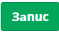
Важно! Всички дела, образувани по шифри, добавени по описания начин с оглед специален достъп, ще се маркират автоматично като дела с Ограничен и Специален достъп!
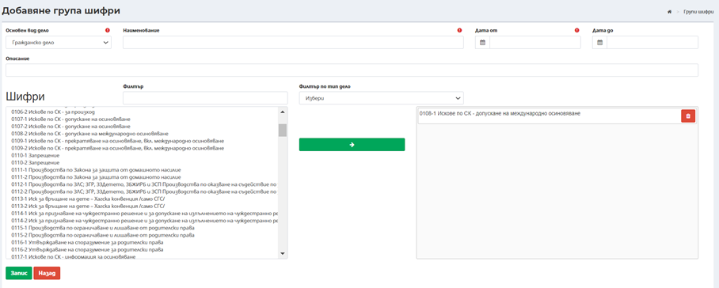
Връщаме се в екран Списък групи шифри - Специален достъп, където вече е създадена и визуализирана група Деловодство – осиновяване, от дата 08.06. 2023 г., за да добавим потребители. Чрез избор на бутон
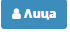
се достъпва екранна форма Лица към група - Деловодство - осиновяване (Специален достъп).
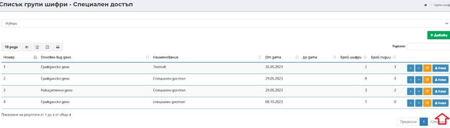
Чрез преместване от лявата в дясната таблица, избираме оторизираните потребители и ги запазваме с натискане на бутон Запис. В случай на необходимост, добавен вече потребител да се премахне от групата избираме червения бутон изтриване.
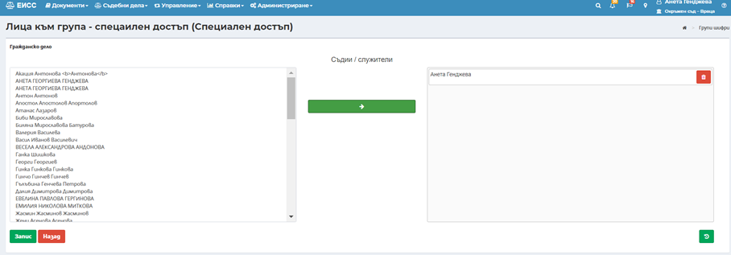
За да се запази направеният избор е необходимо да се натисне бутона в долния десен ъгъл на екрана.
Маркиране на специален достъп за шифри извън групите, по съдийска преценка
След образуване и разпределение и възникнала необходимост, маркирането на дело със специален достъп е препоръчително да става ръчно, през меню Основни данни -> Индикатори -> Редакция.
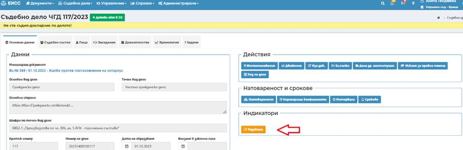
Достатъчно е да се маркира Специален достъп, автоматично след запис ще се маркира и ограничен достъп.
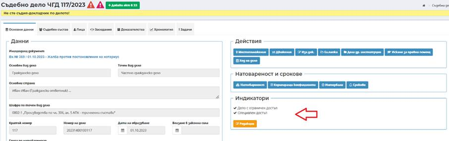
Маркирането се извършва от съдията, разпределен да гледа делото, след което през Съдебен състав -> Други -> Добави е необходимо да се добави поне един служител, който да има достъп.
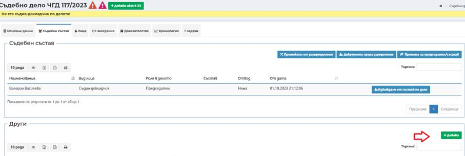
Добавени са две нови възможности за избор – деловодител, друг съдебен служител.
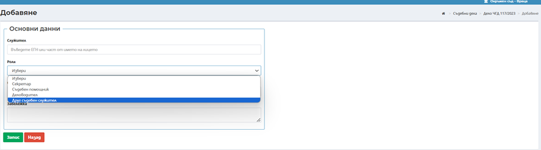
Всяко новообразувано дело по този шифър, не се маркира автоматично при образуване.
Регистриране на входящ документ и образуване на дело
При регистриране на входящ документ е добавена възможност за маркиране на Специален достъп.
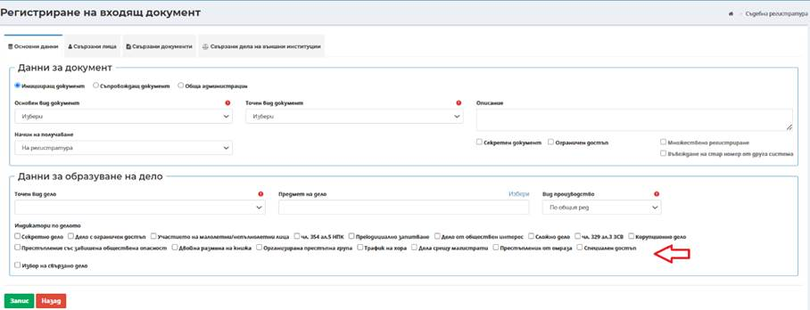
След образуване на дело, ако избраният шифър е от списъка със специални шифри, то автоматично се маркира като дело със специален и ограничен достъп. Има възможност за размаркиране, както и за ръчно маркиране по преценка на съдия. В горната лява част на екрана се появява икона – индикатор за специален достъп.
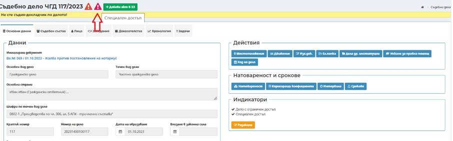
При обжалване и изпращане през Движение в по – горен съд, делата маркирани като такива със специален достъп, отиват на по – горната инстанция отключени, като в електронната папка се виждат всички индикатори. По – преценка на по – висшата инстанция, новообразуваното дело може да се заключи. Разпределящите имат достъп до всички дела.